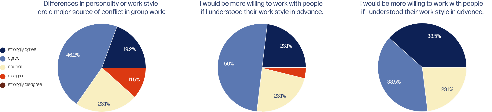
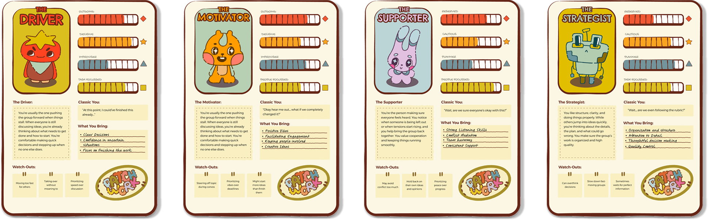
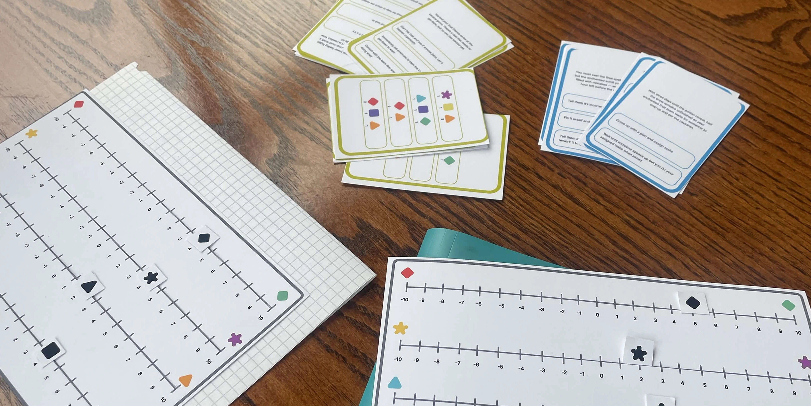
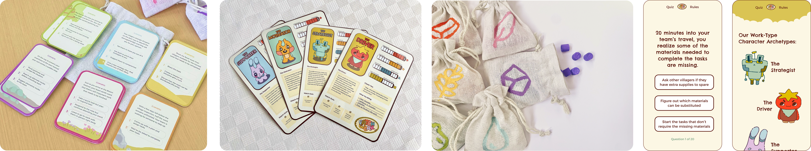
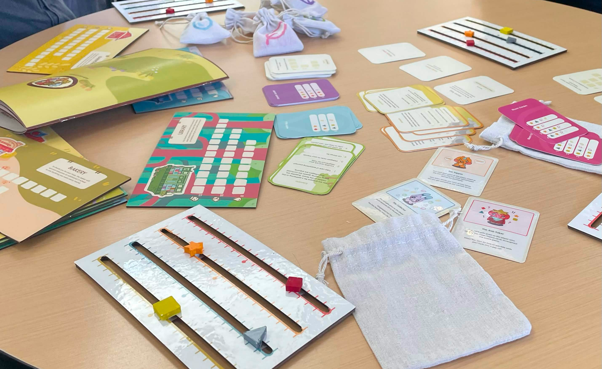

A Capstone Project
My Contributions
Duration
14 Weeks (Jan - April 2026)
Role
Product Design
Game Design
Art Direction
Tools
Figma
Adobe InDesign
Team Members
Karina Shuen
Daphne Borrel
Introduction
Patchwork is a narrative based card game designed to help students better understand themselves and their teammates before beginning a collaborative project. Through shared decision making, resource collection, and team planning, players move through six phases set in a fictional village, encountering scenarios inspired by common group dynamics. By the end of the game, each participant receives a work-style archetype based on the DISC model alongside a group synergy score, offering insight into individuals tendencies and collective collaboration.
Going into the capstone project, we did a bit of research into icebreaker and why they dont really work as intended. The first two to three weeks of our proccess was heavily focused on researching our problem space. This research left us with quite a list of questions.
Primary Research
To start, we had to figure out if people would find that learning their and their teams work-archetype would be actually be helpful for them. We sent out a survey and learnt that nearly half of the respondents of our target demographic felt that personality or work-style differences cause group conflicts. We also found that most respondents feel that that understanding teammates work styles is important for successful collaboration.

Narrowing Down the Space
With all of these questions arising, I realized our scope was too broad, so we deicided to hone into a specific audience and scenario to guide our design. Since it wouldn't be possible for one type of icebreaker to work for every group, we decided to focus on academic groups that were not very familiar with each other but would need to work together for long periods of time. We also decided to gamify the icebreaker to help make people more comfortable using it, since one of the factors making icebreakers not work was the fact they are too direct and put people in an awkward position. These changes lead us to our final research question.
Final Research Question
How might we design a physical game that helps students aged 18 to 25 discover and share their work styles to improve collaboration in long-term group projects?
Researching Precedents
Since I am not very familiar with game design and the mechanics of it, I spent a lot of time looking at other collaborative games and drawing from how they were played, the ways the rules were laid out, and how the mechanics carried through the gameplay. This research lead me to find that games with simple and easy-to-follow rules are better, especially for our target audience, since its a lot easier for players to go through the game and wont make them give up before even starting.
Laying Out Archetypes
Initially, we wanted to combine two different archetype models to create 6 'new' archetypes. However, due to time constraints and worries about accuracy of the new archetypes we decided against it, instead choosing to focus on refining our other assets. Based on the DISC model, we needed up with four scales to measure archetypes on: Energy (reserved vs. outgoing), Stability (planner vs. improviser), Structure (cautious vs.decisive), and Social (task focused vs. people focused).

Initial Playtesting
The initial structure of the game was that each player draws a scenario card and collects points based on the answer they choose. With this initial simple structure, we found:

Final Refinement
We did test both a slider and tokens for point tracking, but found the slider was better overall since the tokens made too many pieces to keep track of, so we traded the scalability of tokens for the simplicity of the slider. Despite the scenario part going very smooth, we found that it felt too simple and didn’t require collaboration (too much like a basic personality quiz), so I spent more time thinking about different ways to add collaboration and team building.
Final Game
A narrative based card helping students better understand themselves and their teammates. Through shared decision making, players move through six phases set in a village, encountering scenarios inspired by common group dynamics. By the end, players receive an archetype based on the DISC model alongside a group synergy score, offering insight into their collaboration.
Gameplay Phases
The gameplay follows two phases - the scenario phase followed by the building phase:
The Scenario Phase: The first player will take a turn drawing a card from the Willow Grove deck, reading the scenario aloud without revealing the back of the card.
All players select their most realistic answer. Once all players have chosen their answer, they collect points (on the points slider) and resources from the back of the card based on their answer.
The scenario phase continues with different cards until all playes have read a card each.
The Building Phase: The first build round, 3 random Building Cards are drawn and placed faced up on the table. Players take turns either:
building, trading, buying a chance card, or skipping the turn. The build phase ends after all players have taken their turn.
Round Progression: After each Building Phase, a new Scenario Phase begins, then another Build Phase, continued until the last secnario deck is used.
When there are no decks remaining, the game concludes.

Creating Group Bonds
Patchwork helps groups create a better understanding of each others working styles and communication styles by putting them through gamified scenarios of 'real-life' situations that might occur when in a group setting. The players need to work together to decide on which tasks to focus on (which building they want to build), how to allocate resources among themselves, and how to balance differences in importance or when a gorup member has additional responsibilities (chance cards). The game encourages conversation through fantasy-based scenarios, helping players get to know each other better without becoming too personal.
Results of the Play
At the end of the game, the group is given a group synergy score based on how well they worked together and communicated to allocate resources to buildings. This group synergy is measured on the amount of buildings the group completely built. Players also get their personal archetype. These archetypes will also help encourage and facilitate conversations futher, allowing the group to discuss why they think they got their archetype, agree or disagree with it, as well as compare their archetype with the rest of the group. Together, they will also be able to dertemine areas they may be lacking in (e.g. the group doesnt have a strategizer) to keep in mind where they might need to be more careful to make up for in the future.

What I Learned
What's Next?
For the future of this, I think making an at-home print friendly version of this would be cool like we talked about in class. We also weren’t able to 3D print as many resource tokens as we wanted to for the gameplay, so they run slightly low which is something we can fix easily for the future. I think also designing packaging and advertisements for the game would be cool experience as well!